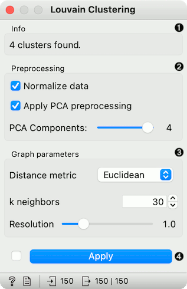
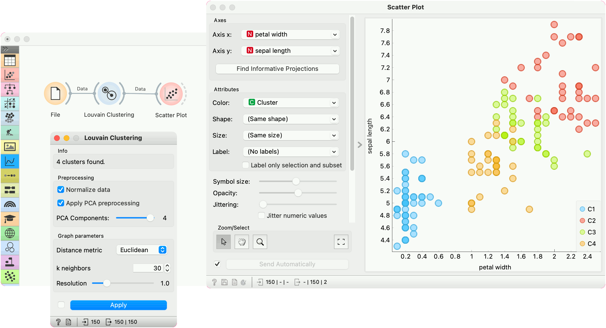

Louvain Clustering
Groups items using the Louvain clustering algorithm.
Inputs
- Data: input dataset
Outputs
- Data: dataset with cluster label as a meta attribute
- Graph (with the Network addon): the weighted k-nearest neighbor graph
The widget first converts the input data into a k-nearest neighbor graph. To preserve the notions of distance, the Jaccard index for the number of shared neighbors is used to weight the edges. Finally, a modularity optimization community detection algorithm is applied to the graph to retrieve clusters of highly interconnected nodes. The widget outputs a new dataset in which the cluster label is used as a meta attribute.

- Information on the number of clusters found.
- Preprocessing:
- Normalize data: Center to mean and scale to standard deviation of 1.
- Apply PCA preprocessing: PCA processing is typically applied to the original data to remove noise (see PCA widget).
- PCA Components: number of principal components used.
- Graph parameters:
- Distance metric: The distance metric is used for finding specified number of nearest neighbors (Euclidean, Manhattan, Cosine).
- k neighbors: The number of nearest neighbors to use to form the KNN graph.
- Resolution is a parameter for the Louvain community detection algorithm that affects the size of the recovered clusters. Smaller resolutions recover smaller clusters and therefore a larger number of them, while, conversely, larger values recover clusters containing more data points.
- When Apply Automatically is ticked, the widget will automatically communicate all changes. Alternatively, click Apply.
Preprocessing
Louvain Clustering uses default preprocessing if necessary. It executes it in the following order:
- continuizes categorical variables (with one feature per value)
- imputes missing values with mean values
To override default preprocessing, preprocess the data beforehand with Preprocess widget.
Example
Louvain Clustering converts the dataset into a graph, where it finds highly interconnected nodes. In the example below, we used the iris data set from the File widget, then passed it to Louvain Clustering, which found 4 clusters. We plotted the data with Scatter Plot, where we colored the data points according to clusters labels.

We can visualize the graph itself using the Network Explorer from the Network addon.
References
Blondel, Vincent D., et al. “Fast unfolding of communities in large networks.” Journal of statistical mechanics: theory and experiment 2008.10 (2008): P10008.
Lambiotte, Renaud, J-C. Delvenne, and Mauricio Barahona. “Laplacian dynamics and multiscale modular structure in networks.” arXiv preprint, arXiv:0812.1770 (2008).